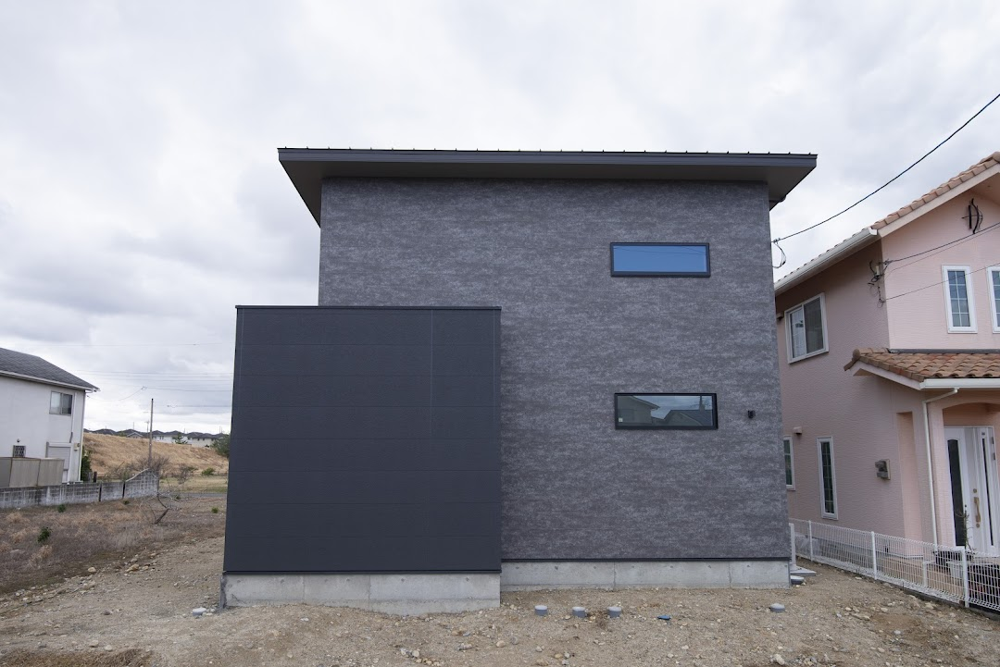

アウトドアリビング。カリフォルニアスタイルの開放的な住まい
子どもが産まれる前から戸建てに憧れていたKさん。特にカリフォルニアスタイルへのこだわりが強く、的確な提案と自分の好みをしっかり受け取ってくれる担当者に惹かれ、シバ・サンホームでの家づくりを決めました。一番こだわったのは、主寝室と3つの子ども部屋それぞれに異なるカラーを塗ったカラフルな扉。コーディネーターの提案で階段の手すりをロープにするなど、細部にも非日常感を散りばめました。カバードポーチと芝生の庭は、アウトドアリビングとして活躍。人工芝を採用し、「子どもが裸足で走り回っても安心で、お手入れも楽になりました」と満足そうに話してくれました。夜になると、庭から見えるキッチンがハワイ雑貨に照らされ、まるでBARのような雰囲気に。「SNSに投稿したら反響が大きく、よりこの家が好きになりました」と嬉しそうに語ってくれました。
シバ・サンホームに決めた理由
「カラフルな扉と広い庭。憧れのカリフォルニアスタイルの家」
— Kさん



Plan 間取りのポイント
カバードポーチと広い庭をアウトドアリビングとして楽しめる、カリフォルニアスタイルの住まい。白い外観と青空が爽やかに調和します。主寝室と3つの子ども部屋には、それぞれ異なるカラーを塗ったカラフルな扉を採用し、毎日の気分を上げてくれるアクセントに。階段の手すりにはロープを用いるなど、細部まで遊び心を散りばめました。庭には人工芝を敷き、お手入れもラクに。夜はハワイ雑貨に照らされたキッチンがBARのような雰囲気を演出する、非日常感あふれる住まいです。
※ 原本パンフのPlan Point欄が南国リゾート（Case07）の文章を誤って掲載していたため、実際の特徴に合わせて作成しました。文面ご確認ください。